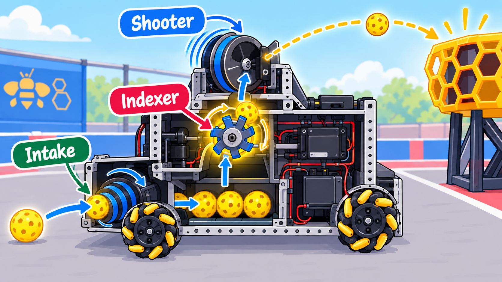
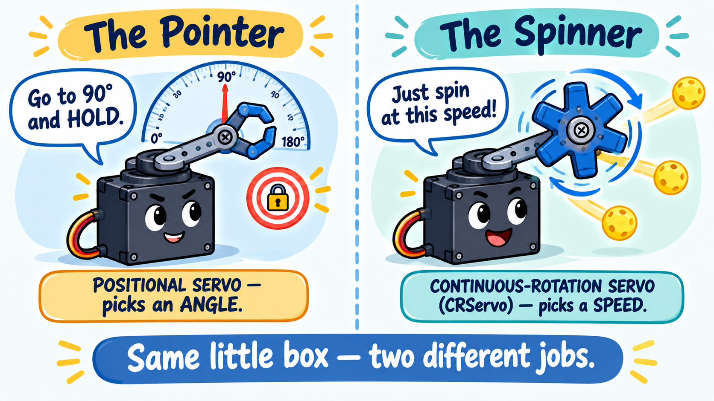
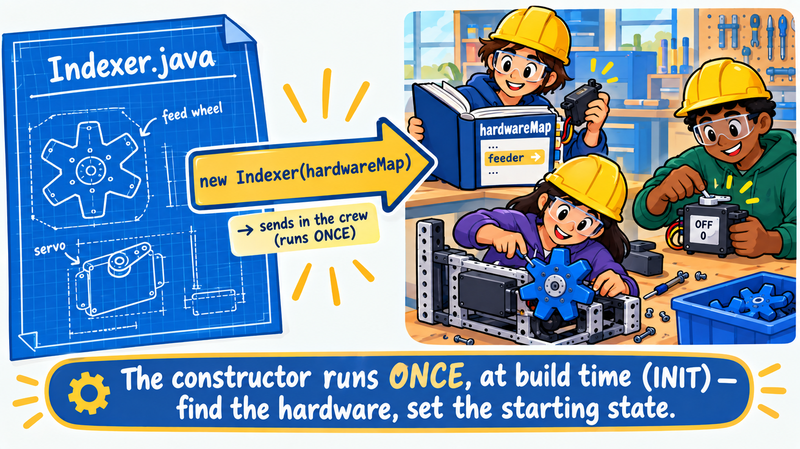
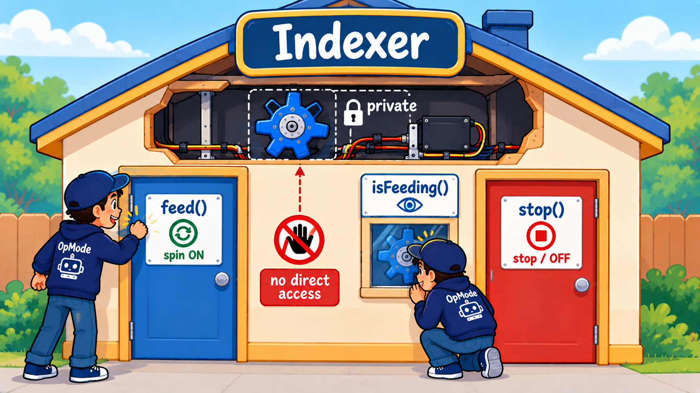

Think of your robot as a little assembly line for game pieces. The intake at the front grabs pollen off the floor and pulls it in. Your storage holds up to four pieces waiting inside. And soon a spinning flywheel up top will launch them across the field into the hive. But there's a gap in that line: what pushes a stored piece up into the flywheel, one at a time, exactly when you want to fire? That's the missing part you build today — the indexer.

The indexer is a small feed wheel tucked between your storage and your shooter. Hold the fire button and it spins, flicking stored pieces up and out one after another. Let go and it stops. It's the trigger of your whole scoring mechanism — nothing gets launched until the indexer feeds it.
You'll build it as a subsystem — the exact same four-part shape you learned on the intake — but this one introduces a new kind of actuator and a simpler state machine. Two small new ideas on familiar bones.
It sits between your storage and your shooter, like the gate at the end of a checkout lane. Hold the fire button and the feed wheel spins, moving one stored piece at a time up toward the flywheel. Let go and it stops. That "one at a time, only on command" job is the whole point — it keeps you from dumping your entire load at once.
The intake was a DcMotor. The indexer is a CRServo — a continuous-rotation
servo. Here's the fun twist: a servo can have one of two totally different personalities, even
though the two look almost identical sitting on the table. Meet them.

The Pointer (a positional servo) is a perfectionist about angle. Tell it “go to 90°” and it snaps there and holds, fighting to stay put — perfect for a claw that must open to exactly the right width, or a wrist that flips to a set position.
The Spinner (a continuous-rotation servo) gives all that up. It doesn't know or care what angle it's at — you just tell it a speed and direction and it turns, like a tiny motor. That's exactly what a feed wheel wants: spin while I'm feeding, stop when I'm not. So the indexer uses a Spinner.
setPower(), simpler hardwareThe best part: The Spinner is driven with the same setPower(speed) call you already know
from the motor — 1.0 is full speed one way, 0.0 is stop. But it plugs into a servo
port instead of a motor port, with no encoder to wire and no gearbox to configure. The only thing that
changes in your code is the type: you ask the hardware map for a CRServo instead of a
DcMotor.
The intake had three states (forward, off, reverse) because it genuinely does three different jobs.
The indexer only ever does two things: it's either feeding or it's not. When a
machine has just two states, you don't need a whole enum — a single true/false
field says it all.
So this subsystem is the intake's little sibling: same four parts (a field that remembers the state, command
methods that change it, and an update() that makes the hardware match), just built around one boolean
instead of a three-name enum.
Indexer.javaA new file just appeared: Indexer.java. Open it and read the top. The CRServo import, the
FEED_POWER constant, and the empty feeder field are there for you. What's missing is the
constructor, the state, and the commands. You'll add them in order — and along the way we'll finally
slow down and really unpack that constructor you've now met five times.
One boolean is the entire "state" of this machine. It starts false — a robot should never boot up
feeding.
Indexer.java⩢ Copyprivate boolean feeding = false; // start stoppedEvery subsystem you've built so far came with its constructor already written — you saw it in
Drivebase and Intake but never wrote one. This time you will, because it's short and it's the
perfect chance to really get what it does.
Indexer.java⩢ Copypublic Indexer(HardwareMap hardwareMap) {
feeder = hardwareMap.get(CRServo.class, "feeder");
feeder.setPower(0.0);
}Back in the Drivebase lesson we said a class is like a blueprint for a room, and building
the room from that blueprint is like a construction crew showing up once to install the fixtures and
plug everything in. That crew is the constructor. Now let's look at what it actually is, line by
line.

new Indexer(hardwareMap) sends in the crew. The constructor
runs once, at build time — it finds the hardware and sets the starting state, then its job is done.Line by line:
public Indexer(HardwareMap hardwareMap) — this is the constructor. You can spot one
instantly: it has the exact same name as the class (Indexer) and no return type (not
even void). That's the rule that makes it a constructor instead of a normal method. The
HardwareMap hardwareMap in the parentheses is a parameter — the robot's "phone book" of
every motor, servo, and sensor, handed in from the outside so the constructor can look devices up.feeder = hardwareMap.get(CRServo.class, "feeder"); — ask the phone book for the
device named "feeder" (the name from the Driver Hub config), and store it in our field. This is the
moment the empty feeder field becomes a real, usable servo.feeder.setPower(0.0); — leave it stopped, so the robot never boots up with the
feeder already spinning.What line actually calls this constructor? The line new Indexer(hardwareMap) does —
the new keyword is what sends in the crew. You'll write that line yourself in a little bit, over in
Robot.java. Open it here to see exactly where it goes:
That call happens exactly once, during INIT, before the match starts. That's the
difference worth burning in: the constructor runs once (find the hardware, set it up,
set the starting state), while update() runs every single loop (~50 times a second) to
act. You look a device up once in the constructor — not 50 times a second — and then just
use it in update(). Keep “set up once” and “do repeatedly” in separate places and your
whole robot stays easy to reason about.
Time to give the outside world a way to ask the indexer to do things. You do that with methods.
A method is a named action a class knows how to do — a little block of steps you can run just
by calling its name, as many times as you like. You've been using them all along: telemetry.addData(…),
motor.setPower(…), robot.update() are all methods. Now you're writing your own, so the rest
of your program has clean, named ways to work with the indexer.
You'll add exactly three, because these are the only things anyone outside the indexer actually needs:
feed() — "start feeding." A named command, so an OpMode never has to know
how feeding works — it just asks.stop() — "stop feeding." The matching off switch.isFeeding() — "are you feeding right now?" A read-only peek at the state, so
the OpMode can show it on telemetry or decide whether it's safe to shoot — without being able to secretly
change anything.Notice what these do not do: none of them touches the feeder servo. They only flip the
feeding flag (or report it). Deciding and doing stay split apart — update() (Part D) is the
only place that actually moves hardware. That's the same clean shape you built on the intake.
Back in From Messy Loop to Clean Class we said a subsystem is like a house: the hardware is
private — wiring sealed inside the walls — and the only way in is through a public
door you control. The indexer is that idea again, exactly. The feeder servo is private:
nothing outside the Indexer can reach it. The only ways in are the three public methods you're
about to write — feed(), stop(), and the little peek-window isFeeding().
Why bother? Because if any code anywhere could grab the feeder and spin it, a misbehaving indexer could be caused by a bug anywhere in your whole program. By sealing the servo inside and forcing every request through three known doors, there's one place feeding can start, one place it can stop, and one file to walk into when something's wrong. That's what keeps a big robot program debuggable.

feeder stays private, sealed in the walls. The OpMode can only come in
through the public doors feed() and stop(), or peek through the isFeeding()
window — never touching the hardware directly.Indexer.java⩢ Copy/** Start feeding pieces out. Only changes the flag -- update() moves the servo. */
public void feed() {
feeding = true;
}
/** Stop feeding. */
public void stop() {
feeding = false;
}
/** Lets the OpMode read whether the indexer is running -- to show it, or to gate a shot. */
public boolean isFeeding() {
return feeding;
}update(): turn the flag into servo powerThe scheduler calls update() every loop. With only two states, we don't even need a switch —
a single line does it: full power while feeding, zero when stopped. That little ? : is a shorthand
called a ternary — a fancy word that just means “pick one of two values.” Read it left to
right like a question: feeding ? FEED_POWER : 0.0 asks “is feeding true?” The
? starts the question; if the answer is yes you get the value before the :
(FEED_POWER), and if no you get the value after it (0.0). It's just a compact
if/else squeezed onto one line.
Indexer.java⩢ Copyfeeder.setPower(feeding ? FEED_POWER : 0.0);The subsystem is built, but the robot doesn't know about it yet. Open Robot.java and give it a home
— the same two small edits you made for the intake.
Robot.java⩢ Copypublic final Indexer indexer; // the feed wheel that pushes stored pieces outThat second line is what makes robot.update() call your indexer's update() every loop —
forget it, and the servo never moves.
Robot.java⩢ Copyindexer = new Indexer(hardwareMap); // build it -- the constructor finds "feeder" in the config
subsystems.add(indexer); // register it so robot.update() calls indexer.update() every loopNow wire the gamepad. This one is even simpler than the intake: no edge detection, no memory field. Feeding is a hold, not a toggle — while X is down we feed, the instant it's up we stop. So we can read the button directly every loop.
Edge detection was for toggles — "one tap flips a setting," where reacting on all 15–20 loops of a
held press would be a disaster. Feeding isn't a toggle; it's a hold. We want "on for every loop
X is down." So plain if (gamepad1.x) is exactly right — and simpler is better when it fits.
MecanumDrive.java⩢ Copy// Hold X to feed pieces out. No edge detection needed -- feeding is simply ON while held.
if (gamepad1.x) robot.indexer.feed();
else robot.indexer.stop();Your robot starts a match pre-loaded with pollen. Build, Init, and Start, then hold X. The feeder spins and the stored pollen rolls out the front of the robot, one flick at a time. Let go and it stops.
Right now the pieces only dribble out the front, because your robot has no shooter yet. The indexer is doing its whole job — feeding pieces out on command — there's just nothing above it to grab them.
That changes next lesson. You'll add the flywheel: a heavy wheel spun up to high speed
that catches each fed piece and launches it across the field into the hive. The indexer you just built is the
trigger; the flywheel is the cannon. Same feed() call — but now the pieces fly.
You built a second subsystem — a new actuator (the CRServo) and a two-state machine — and wired it to a hold-to-fire button. Next lesson: the flywheel that turns this dribble into a real shot.